Microsoft WebMatrix 3 Preview
公開日：
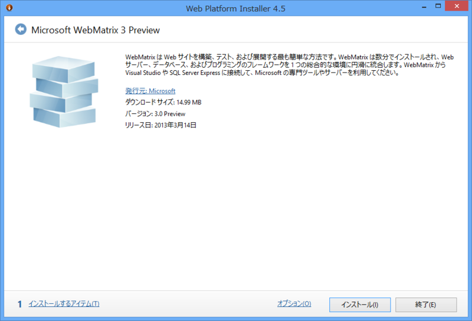
Webmatrix 3 Preview available and it's cool, no seriously it's cool.URL
2013-03-21 22:28:50 via web
ｷﾀ━━━━━━(ﾟ∀ﾟ)━━━━━━!!!!
早速インストール
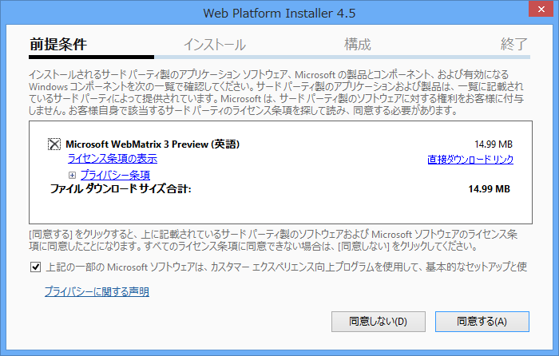
「英語版」らしい。日本語版もあればいいけど、べつに英語でもいいや。
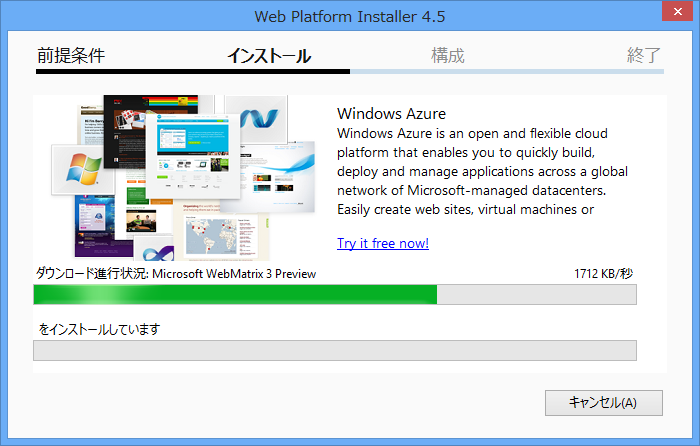
踊りながらセットアップを待つ。
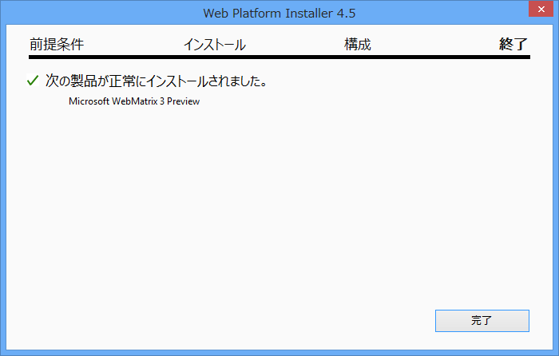
依存関係周りは WebMatrix 2 と変わらなさそう。自分の環境では何も要求されなかった。
追記（2013-03-22 6:10 JST）
@daruyanagi 今回からSQL Server等の余計なインストールを要求されることがなくなっているはずです。今までWMをインストールしようとすると大量の追加インストールが必要だったのが、かなり改善されています。まあ既にインストールされてる場合は関係ないんですけど
2013-03-22 06:05:50 via web to @daruyanagi
帝国兵のひとが教えてくれました。確かに不要なものまでインストールされるのが不快だという人は多かったので、素晴らしい改善だと思います。
Windows Azure 連携
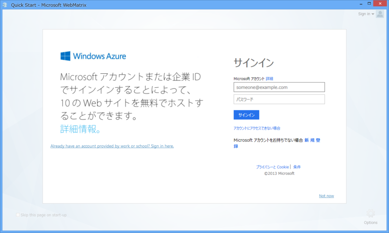
Microsoft ID （Windows Azure）でログインしろと言われる。たぶんこれは必須でないけれど、“Not now”のリンクが小さいので誤解されそう。とりあえず今回は素直にログインしてみる。
すると、スタートアップ画面に“Windows Azure”のメニューが！？ あかん、手が止まらへん。誘われるままにメニューをぽちっ。
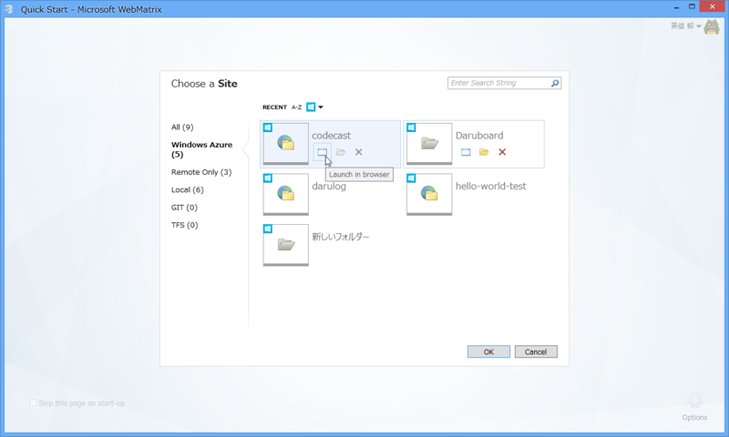
ふぁ━━━━━━(ﾟ∀ﾟ)━━━━━━!!!!
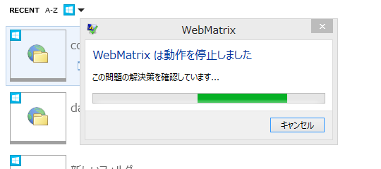
あかん、興奮しすぎて WebMatrix がクラッシュしてしまった。
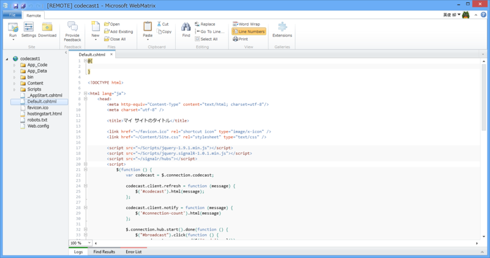
成功するとこんな感じ。“Windows Azure Web Sites”が直接開ける。もちろん、ダウンロードしてローカルで開くことも可能。
Source Control
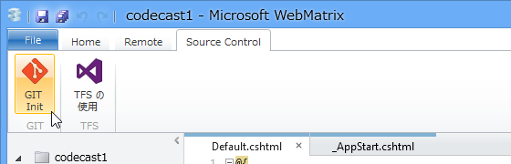
もう一つの目玉機能は、Source Control らしい。とりあえず初期状態で Git と TFS に対応している。
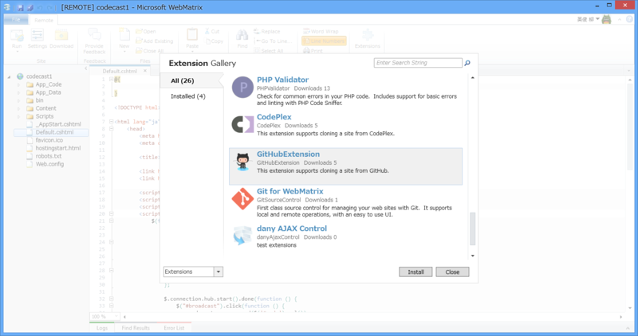
拡張機能として提供されているので、初回利用時にはインストールが必要。
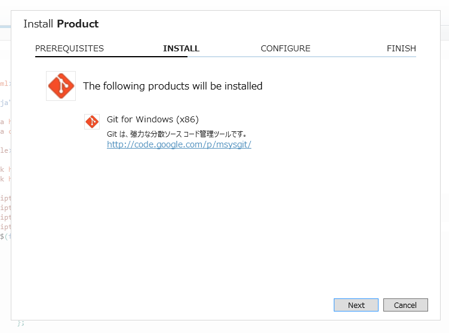
たとえば、Git Init しようとすると、「Git for Windows」がインストールされる。これって msysgit と一緒なのかなぁ？
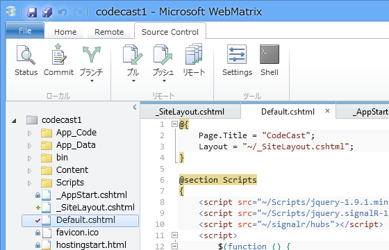
インストールするとこんな感じになる。一通りのことはできるみたいだけど、なんだあれ、巻き戻しとブランチのツリー？ アレはほしいと思った。あと、Diff は「WinDiff」を使うので見栄えがアレ。好みの Diff ツールが使えるみたいだが……できたらカッコいいのが内蔵されてほしい。
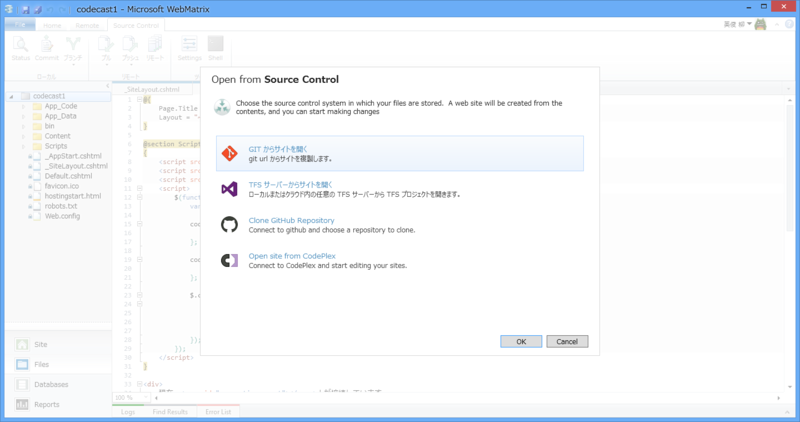
GitHub や CodePlex からプロジェクトをクローンすることもできる。
Source Control サービス → ローカルにクローンはできるけれど、ローカルのレポジトリ → Source Control サービスのプロジェクトの新規作成 はできないみたいなので、サービス側でプロジェクトを作ってクローンするのがいいのかな。
まだまだ全部みきれてないけれど、これはすごいアップデートだなぁ。ASP.NET Web Pages 3 なんかもでちゃったりするんだろうか？（笑